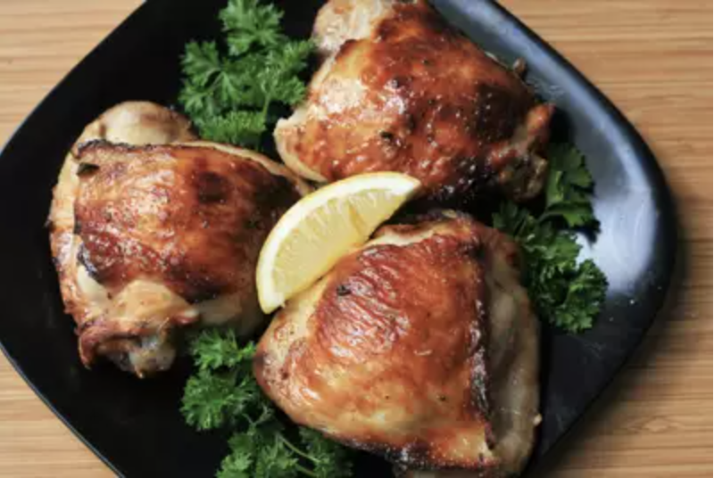

Home Page
Air Fryer Chicken Thighs

Beautifully crispy air fried bone in chicken thighs
Air frying is a healthier way to crisp up any item you would like.
the lack of oil is an easy way to maintain healthiness, and deliciousness
in your foods. This air fryer chicken is reminiscent of a chicken cordon bleu,
however it is stuffed with turkey, rather than ham.
Ingredients:
- 6 ounces Swiss chess
- 1 cup panko bread crumbs
- 1 tablespoon sazon seasoning
- 1/2 cup flour, divided
- Salt and freshly ground black pepper to taste
- 6 slices turkey lunch meat
- 6 medium, boneless skinless chicken thighs
- Nonstick cooking spray
Steps:
- Preheat air fryer to 400 degrees F
- Cut Swiss cheese into six 2 x 1/2 x 1/2-inch pieces
- Place bread crumbs, 2 tsp sazon seasoning, and 1 tbls flour
in shallow dish
- Place remaining flour and sazon seasoning in a second shallow dish
- Crack eggs into third shallow dish, whip eggs until yellow and frothy.
Season eggs with salt and pepper
- Take 1 piece of turkey (6 total) and wrap around 1 piece of
Swiss cheese (6 total)
- Open up chicken thighs and place turkey roll inside,
roll the chicken thigh around. Place chicken seam-side down into
the air fryer. Spray with nonstick spray
- Reduce air fryer temperature to 380 degrees F,
cook chicken for 15 minutes. After 15 minutes, flip chicken thighs,
spray with nonstick spray. Drop temperature to 370 degrees F.
Cook until chicken reaches 165 degrees F internal, approximately 8 minutes.
Serve immediately